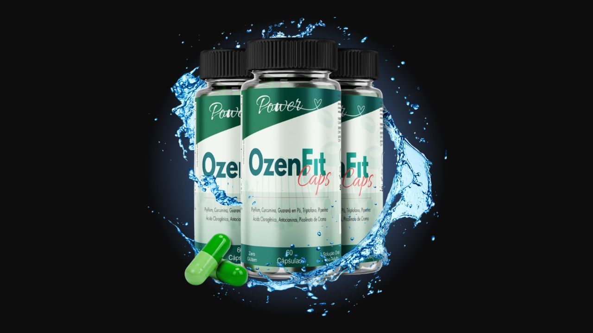

Analisamos os 8 ingredientes da fórmula americana, os efeitos reais e para quem realmente vale a pena. Leia antes de comprar.

Ozenfit Caps é um suplemento em cápsulas com 8 ingredientes naturais focados em saciedade, queima de gordura, controle glicêmico e energia. Garantia de 90 dias — risco zero para testar.
Garantia incondicional de 90 dias · Frete grátis · Compra 100% segura
→ Acessar Site OficialOzenfit Caps é um suplemento alimentar em cápsulas posicionado como alternativa natural ao Ozempic — o famoso medicamento injetável para controle de peso. É importante deixar claro: não é o Ozempic, não tem semaglutida e não é medicamento. É um suplemento com ingredientes naturais que atuam em mecanismos similares de forma mais suave e acessível.
A fórmula combina 8 ativos naturais com foco em três frentes: reduzir o apetite, acelerar o metabolismo e controlar os picos de glicose — que são os três maiores obstáculos para quem tenta emagrecer sem resultado.
A dose é 2 cápsulas ao dia — uma antes do almoço e uma antes do jantar. Fundamental beber no mínimo 2 litros de água por dia para potencializar o efeito do Psyllium na saciedade.
Fibra solúvel que forma um gel no estômago, criando saciedade real antes das refeições. Também regula o intestino e reduz a absorção de colesterol. Um dos ingredientes com mais evidência científica para controle do apetite.
Termogênico natural brasileiro com cafeína de liberação progressiva. Aumenta a disposição, favorece o emagrecimento, melhora a concentração e ativa o sistema cardiovascular — sem os picos de adrenalina do café comum.
Mineral essencial que regula os níveis de açúcar no sangue e melhora a ação da insulina. Reduz a compulsão alimentar — especialmente por doces — ao estabilizar a glicemia ao longo do dia.
Aminoácido essencial precursor da serotonina. Controla o apetite emocional, melhora o sono, reduz o estresse e estimula o metabolismo. Essencial para quem come por ansiedade.
Anti-inflamatório natural poderoso. A inflamação crônica é um bloqueador silencioso do emagrecimento — a Cúrcuma atua diretamente nisso, além de ter forte poder antioxidante.
Fitoquímico concentrado no café verde. Inibe o acúmulo de gordura, reduz a concentração de glicose no sangue e promove o metabolismo de carboidratos e gorduras. Um dos mais estudados para emagrecimento.
Compostos antioxidantes de frutas vermelhas e roxas. Combatem alterações metabólicas associadas à obesidade, controlam a glicemia e diminuem o acúmulo de gordura corporal.
Extraída da pimenta preta, a piperina potencializa a absorção dos outros ingredientes em até 20x. Também reduz o apetite, combate o acúmulo de gordura e tem ação anti-inflamatória comprovada.
Ozempic é um medicamento injetável com semaglutida, vendido em farmácias com prescrição médica. Ozenfit Caps é um suplemento alimentar natural em cápsulas — sem relação farmacológica com o medicamento. São produtos completamente diferentes.
Ozenfit Caps tem uma composição séria e bem pensada. Os 8 ingredientes se complementam — o Psyllium cria saciedade, o Triptofano controla a compulsão emocional, o Cromo estabiliza a glicemia, o Guaraná dá energia e a Piperina potencializa tudo. É uma fórmula completa para os principais sabotadores do emagrecimento.
Não substitui o Ozempic farmacêutico — mas para quem busca uma alternativa natural, acessível e sem prescrição, entrega resultados reais dentro de expectativas corretas.
A garantia de 90 dias elimina qualquer risco. São 3 meses para testar com segurança total. Se não funcionar, o dinheiro volta integralmente. Esse é o tipo de confiança que produtos sérios oferecem.
Garantia incondicional de 90 dias · Frete grátis nos kits · Compra segura
→ Acessar Site Oficial